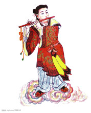
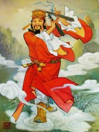

八仙是中国民间传说中广为流传的道教八位神仙。八仙之名，明代以前说法不一，有汉代八仙、唐代八仙、宋元八仙，所列神仙各不相同。至明代吴元泰《东游记》始定为：铁拐李（李玄）、汉钟离（钟离权）、张果老（张果）、吕洞宾（吕岩）、何仙姑（何琼）、蓝采和（许坚）、韩湘子、曹国舅（曹景休）。据华轩居士考证，北宋中期应铁拐李之邀在石笋山聚会时始有八仙之说。后有八仙过海，各显神通名言。
铁拐李
先说铁拐李，铁拐李在民间传说中为八仙之首，有的书中称其姓李，名洪水，隋朝峡人，鲁迅先生的《中国小说史略》则说他姓李，名玄；赵翼的《陔余丛考》中又说他姓刘。有说他是唐玄宗开元、代宗大历之间人，学道于终南山，一次元神出壳，没曾想肉身为虎所食，只得投身于一个跛乞丐。《历代神仙通鉴》称，其原本一俊伟丈夫，善道术，会使导出元神法术，修练于砀山岩穴中，有次应师父老子之约，行“元神出壳”法术，赴千里之外华山，数日后回归，发现其肉身被其徒误焚，突见附近一饿殍，灵机一动说“即此可矣。”即从饿殍脑门而入，神魂归壳后则成一蓬头卷须、黑脸巨眼，并且还跛了一只右脚的丑陋汉子。看来他是一位民间口耳相传，诸事附会而成的道家仙人。又称铁拐李，相传姓李，名玄，又叫李凝阳、李洪水、李孔目。据说他本来长的十分魁梧，相貌堂堂。在砀山洞中修行。因为约定要参加老君的华山仙会，临走时对弟子说，倘若元神七日不回返，则将尸壳焚化。于是留下尸壳，元神外游。不料到了第六天，弟子家中来人报信母亲病危，弟子们无奈就烧了尸壳。当弟子回家后，不久李铁拐的元神回归，无处可托。忽见林中有一饿死的人尸，则从他的前额脑门进入，站起来之后，才觉不行，赶忙从葫芦里倒出老君所赠的仙丹，葫芦忽然闪出金光，映出一个丑陋的形象，黑脸蓬头，卷须巨眼，右脚还是瘸的，正在惊讶，身后忽然有人鼓掌，回头一看，正是老君，情急之下，心想把元神跳出。就在这时，老君制止说：“道行不在于外表，你这副模样，只须功夫充满，便是异象真仙。”于是授他金箍一道收束乱发，授予铁拐一根助拄跛足。李铁拐还常背一葫芦，据说里面装有仙药，降到人间时，专门用来治病救人。
汉钟离
八仙中名气仅次于铁拐李的是钟离权。他在八仙中地位较高，特别是由于道教徒的吹捧，名声更大。元时，全真道奉为“正阳祖师”。有关其人物原型，约出现在五代、宋初之际。《宣和年谱》、《夷坚志》、《宋史》等书都有他事迹的记载，只是后来讹为汉钟离，才附会为汉代人。《历代神仙通鉴》、《续文献通考》等书称，钟离权，复姓钟离，字寂道，号云房子，又号正阳子。东汉咸阳人，其父钟离章为东汉大将，其兄钟离简为中郎将，后也得道成仙。而唐代确实有位叫钟离权的人，《全唐诗》录有他的三首绝句，并附有小传云：“咸阳人，遇老人授仙诀，又遇华阳真人，上仙王玄甫，传道入崆峒山，自号云房先生，后仙去。”他留世的诗题为《题长安酒肆避三绝句》，其中有“坐卧常携酒一壶，不教双眼识皇都”、“得道真仙不易逢，几时归去愿相从”等句，还颇有一些“仙味”，当是一位好道之人。他姓钟离，名权，字云房，号正阳子。京兆咸阳（今陕西）人，据说是东汉时期人。有关他的出生非常生动，说有一天，一个巨人大踏步的走进他母亲的内室，大声说道：“我是上古黄神氏，当托儿于此。”顿时，只见异光数丈如烈火，随之汉钟离降生。他一出生就像3岁的小孩一样大，天生一副福相，顶圆额宽，耳厚眉长，口方颊大，唇练如丹，乳圆臂长，更为奇怪的是他昼夜不声不响，不哭不吃。一直到了第七天，他突然说了一句话：“身游紫府，名书玉京。”这一句惊动了他的父母。因为紫府、玉京是天上玉帝的宫城，所以，以为他是神仙转世，父母希望他长大成人多掌大权，因此起名“权”。据说钟离长大以后，任朝廷的谏议大夫，后来奉召出征吐蕃，战败，隐居终南山。遇到东华帝君王玄甫，得到长生真诀、金丹火候及青龙剑法。后来又遇到华阳真人，教他太乙九圭、火符金丹，洞晓玄玄之道。最终在崆峒山紫禁四皓峰得到玉匣秘诀，成了一位仙人。传说他在唐朝的时候度化了吕洞宾，是道教五祖之一。他的形象常常是袒胸露乳，手摇棕扇，大眼睛，红脸膛，头上扎了两个丫髻，神态自若。是个闲散的汉子。
张果老
张果老是八仙中年迈的仙翁，名“张果”，因在八仙中年事最高，人们尊称其为“张果老”，历史上实有张果其人，唐开元年间《唐玄宗敕封仙人张果记》记载其为“邢州广宗人也”（今河北省广宗县张固寨村人），新、旧《唐书》有传，武则天时，隐居中条山，时人皆称其有长生秘术，他自称年龄有数百岁，武则天曾派使者前去召见，张果老佯死不赴。唐玄宗开元二十一年，恒州刺史韦济将其奇闻上奏皇上，玄宗召之，张果又再次装死，气绝很久才苏醒，使者不敢进逼。玄宗闻知，再次派徐峤去邀请。张果只得进京。据说唐玄宗对其传闻有疑，曾叫善算夭寿善恶的邢和璞给张算命，邢却懵然不知张的甲子，又有道师“夜光”善视鬼，玄宗令他看张果，他却问：“张果在哪？”居然对面而看不见。《太平广记》还记张果老自称是尧帝时人，唐玄宗问术士“叶法善”张的来历，叶法善说：“臣不敢说，一说立死。”后言道：“张果是混沌初分时一白蝙蝠精。”言毕跌地而亡，后经玄宗求情，张果才救活他。据史书上记载确有其人，原来是唐朝的道士，这个人擅长法术，经常隐居在恒州中条山，往来于汾晋之间，中国民间传说他活了数百岁，所以人们尊称他为张果老。据说唐太宗、唐高宗知道以后，就派使者召见他入宫，他都不愿意去。到了武则天时期，不得已奉召出山，走到半路假装死去又未去成。到了唐玄宗时期，玄宗派遣使者终于将他请到了宫内，封他为“银青光禄大夫”，赐号“通玄先生”。后来，玄宗准备将他女儿许配给他，他唱道：“媳妇得公平，平地生公府，人以可喜，我以可畏。”最终也没同意这门亲事，恳辞还山，走到半路，死于衡山蒲武县。弟子说他羽化成仙，唐玄宗下令在当地建栖霞观以奉祀。中国民间传说他常背负一个道情筒，倒骑白驴，云游四方，宣唱道情，劝化度人。后来民间的名言“骑驴看唱本”就源于此。他所乘的白驴，日行万里，夜间折叠如纸，放在箱子里。白天骑得时候，用水含在嘴里喷洒一下，就又还原成一天驴。后人题诗：“举世多少人，无如这老汉。不是倒骑驴，万事回头看。”张果老这故事启示我们做任何事情，尽量要考虑全面，思前想后，不能只是一味的瞻前顾后。
吕洞宾
八仙中流传故事最多的当数吕洞宾，在道教中，全真道奉其为“纯阳祖师”，又称“吕祖”。吕洞宾，蒲州河中府（今山西芮城永乐镇）人。原名吕喦（"喦”或作“岩”），字洞宾，以字行，道号纯阳子，绰号回道人，。吕洞宾为天下道教主流全真道祖师，是中国传说中著名的仙人及道教的八仙之一。无论在道教还是在民间信仰，都具有极其重要的地位。《全唐诗》、《词综》中都收有他的诗作。宋代罗大经的《鹤林玉露》、洪迈的《夷坚志》及《集仙传》等书对其均有记载。唐咸通中及第，曾当过两任县令。有说他是九江人，原为唐宗室，姓李，因避武后之祸，易姓为吕。他始名绍光，二十余年科场不第，遂罢举而纵游天下，后被钟离权点化成道。他是八仙中人情味最浓的一个，潇洒、风趣，为民除暴安良，斩妖除怪，还好酒好色，世间流传有《吕洞宾三戏白牡丹》的传说，他的传说既多且杂，但从中也可看出原是唐代一位慕道的士人，后被人们神化成仙。至今在河南睢县仍然保留有明兵部尚书袁可立为祭祀吕洞宾而建的袁家山吕祖庙。吕洞宾曾以进士授县令。他的母亲要生他的时候，屋里异香扑鼻，空中仙乐阵阵，一只白鹤自天而下，飞入他母亲的帐中就消失。生下吕洞宾果然气度不凡，自小聪明过人，日记万言，过目成诵，出口成章，长大后「身长八呎二吋，喜顶华阳巾，衣黄欗杉，系一皂鞗，状类张子房，二十不娶。」当在襁褓时，马祖见到就说：「此儿骨相不凡，自市风尘物处。他时遇卢则居，见钟则扣，留心记取。」后来吕洞宾游庐山，遇火龙真人，传授天遁剑法。六十四岁时，游长安，在酒肆遇见一位羽士青衣白袍，在墙壁上题诗，吕洞宾见他状貌奇古，诗意飘逸，问他姓名。羽士说：「我是云房先生。居于终南山鹤岭，你想跟我一起去吗 」吕洞宾凡心未已，没有答应。这位云房先生就是「钟离权」。到了晚上，钟离权和吕洞宾一同留宿在酒肆中。云房先生独自为他做饭，这时吕洞宾睡着了，他梦见自己状元及第，官场得意，子孙满堂，极尽荣华。忽然获重罪，家产被没收，妻离子散，到老后了然一身，穷苦潦倒，独自站在风雪中发抖，刚要叹息，突然梦醒，钟离权的饭还没熟，于是钟离权题诗一首「黄粱犹未熟，一梦到华胥。」吕洞宾惊道：「难道先生知道我的梦 」钟离权道：「你刚才的梦，生沉万态，荣辱千端，五十岁如一刹那呀 ! 得到的不值得欢喜，失去的也不值得悲，人生就像一场梦。」于是吕洞宾下决心和钟离权学道，并经「十试」的考验，钟离权授他道法。吕洞宾有了道术和天遁剑法，斩妖除害为民造福。吕洞宾被全真教奉为北方五祖之一（王玄甫，钟离权，吕洞宾，刘操，王重阳），世称吕祖、纯阳祖师。
何仙姑
何仙姑是八仙中唯一的女性，有关其身世说法不一。一说她是唐朝人。宋初《太平广记》引《广异记》称有“何二娘”者，是位以织鞋为业的农妇，后因嫌家居太闷，游于罗浮山，在山寺中住下，经常采集山果供众寺僧充斋。一次，远在四百里外的循州山寺僧来罗浮山寺，称某日曾有仙女去彼山采摘杨梅果子，经查实那天正好是二娘采果的日子，再加之大家又不知二娘从何处采来这众多山果，便认为二娘即为循州山寺采果之仙女，从此二娘远近闻名，她也借此不再寄居山寺了。《续通考》说何仙姑为唐武则天时广东增城县人，出生时头顶出现六道毫光，天生一副“仙科”，十三岁时在山中遇一道士，吃了道士一只仙桃，从此不饥不渴，身轻如飞，并可预见人生祸福。后来她应召进京，途中离去。一说她是宋朝人。宋代的一些文人笔记多称她为北宋永州（零陵）人，有称她幼遇异人，得食仙桃成仙。有称她放牧于郊野，遇异人送仙枣，食后而成仙，宋人笔记中还记载了何仙姑一些为人占卜休咎，预测祸福的事迹，一时士大夫及好奇者争先前往彼处占卜。八仙唯一的女仙，据说原名何秀姑，生于唐武则天时期，出生时紫云绕室，头顶上有六道毫光。从小智慧敏捷，聪敏过人。15岁时，梦见神人教她食云母粉，于是轻身如飞，往来于山顶之间，每天早上外出，晚上采山果孝敬母亲。后来辟谷，言语异常，武则天听说后，派使者召请，中途不知方向，有人说在唐中宗时八月初八飞天。还有一种说法是，何仙姑13岁时入山，遇仙人吕洞宾，吕赐其一桃，吃了以后不饥不饿，并能预知祸福之事，颇为灵验。村里的人奉为神明，专门建楼供其居住，后来吕洞宾度其成仙。
蓝采和
八仙中有位玩世不恭，似狂非狂的行乞道仙，名叫蓝采和。南唐沈汾《续仙传》、宋初《太平广记》、陆游《南唐书》等书均载有他的事迹。是唐末至五代时人。其行为怪僻，贪杯喜唱，平时穿一身破蓝衫，一只脚穿只靴子，另一只则光着脚丫子。更不近常情的是，夏天他穿棉衣，冬天却躺卧雪中而全身冒热气（《续仙传》）。平时他手持三尺有余的大拍板，一边打着竹板，一边踏歌而行，沿街行乞，他唱的歌很多，大都是触景而生，不仅令世人觉得高深莫测， 而且颇具仙意。其一云：“踏歌蓝采和，世界能几何？红颜一春树，流年一掷梭，古人混混去不返，今人纷纷来更多。朝骑鸾凤到碧波，暮见桑田生白波。长景明晖在空际，金银宫阙高嵯峨。”他行为癫狂，有人施钱给他，他大都送给贫苦人，蓝采和居无定处，四海为家。本为男子，但在造像中或戏曲中常常女装打扮，手提花篮，据说他本是赤脚大仙降生，原来是一名游方的道士，常穿破烂的蓝衣裳，系着一条3寸多宽的木腰带，一脚穿靴子，一脚赤行。夏天穿的是棉衣服，冬天卧于雪地中，气出如蒸。经常手持3尺多长的大拍唱板，在城市里边走边唱，带醉踏歌，似狂非狂，男女老少都跟随看他，人家把铜钱给他，他却用长绳穿起来，拖地而行，散失了也不回头看一看。有时见到穷人，就把铜钱送给他们。他不停的周游天下。有人在童年和老年时看到他，他容貌依旧。后来他踏歌于濠梁酒楼乘醉，有云鹤笙箫声，忽然轻升云中，抛下靴衫腰带板拍，冉冉而去。他最有名的踏歌是：踏歌蓝采和，世界能几何？红颜一春树，流年一掷梭，古人混混去不返，今日纷纷来更多，朝骑鸾凤到碧落，暮见桑田生白波，长景明晖在空际，金银宫阙高工嵯峨！
韩湘子
唐韩湘子，字清夫，是古代中国民间传说故事中的八仙之一，擅吹洞箫，拜吕洞宾为师学道。道教音乐《天花引》，相传为韩湘子所作。由于韩愈排斥佛老而不惜死，故而佛教方面编造出大颠禅师化韩愈；而道教方面则造出了韩湘子度韩愈来抵消韩愈所带来的影响 。有说法称他是唐朝韩愈的侄孙子韩湘。期形象是一位手持长笛的英俊少年。韩湘子，本名韩湘。传说，汉丞相安抚有一女儿，名叫灵灵，才貌双全。已许配韩湘。但是汉帝想把她婚配与皇侄，安抚坚决不同意。汉帝大怒，将韩湘罢官发配。灵灵悲郁而死，韩湘投生为白鹤，白鹤受钟离权和吕洞宾的点化，又投生为昌黎县韩会之子，乳名湘子，幼年丧父，由叔父韩愈抚养。长大后又得钟、吕二仙传授修行之术。韩愈极力反对，训斥他。韩湘子因此而出家，隐居于终南山修道，得成正果，列为八仙之列。后来，韩湘子屡次化形，度化他的叔叔韩愈，但韩愈多次不悟。后来，韩愈被降官到了潮阳，路经蓝关，雪拥不前，冻埋雪中。湘子赶来相救，并指点度化。韩愈最终感悟，也修道成仙。
曹国舅
排名八仙之末的曹国舅，出现的时间最晚，流传的仙话也较少。其身世，说法大同小异，都和宋仁宗的曹皇后有关。《宋史》有传，曹佾，字公伯，曹彬之孙，曹皇后的弟弟。他性情和易，通晓音律，喜爱作诗，封济阳郡王，身历数朝而一帆风顺，年七十二而寿终。《神仙通鉴》云：曹国舅天性纯善，不喜富贵，却慕恋于仙道，其弟则骄纵不法，恃势妄为，曹国舅对其恶行深以为耻，遂入山修炼，遇钟离权、吕洞宾而收他为徒，很快曹国舅修成仙道。《东游记》中所述曹国舅与上略同。这位神仙的形象是头戴纱帽，身穿红袍官服，手持阴阳板（玉板），与其他仙人的打扮迥然不同。传说他是宋朝的皇帝宋仁宗曹皇后的长弟，名景休。他天资淳善，志在清虚，不慕虚荣，不喜富贵。后来因为他的弟弟骄纵不守法，残害人命。曹国舅深以为耻，于是隐迹山岩，穿戴平民的衣帽，但精心思考的是玄妙深奥的道理，过了10多天也不吃，有一天，他遇到了钟离权和吕洞宾两位仙人，他们问：“听说你在休养，所养的是什么呢？”答道：“养道。”仙人又问：“道在哪里？”曹国舅举手指天。二仙又问：“天在哪里？”曹国舅用手指心胸。二位仙人笑着说：“心即是天，天即是道，你已经顿悟道之真义了。”于是传授他还真秘术，点化指引他入了仙人的团队。还有一种说法，说他出家时皇帝赐他一块金牌，后来过黄河时没有船费，就以此抵押，恰好遇到了吕洞宾，与他一起同游，因此悟道而名列“八仙”。